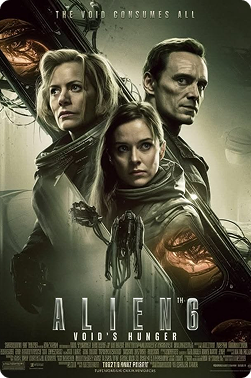
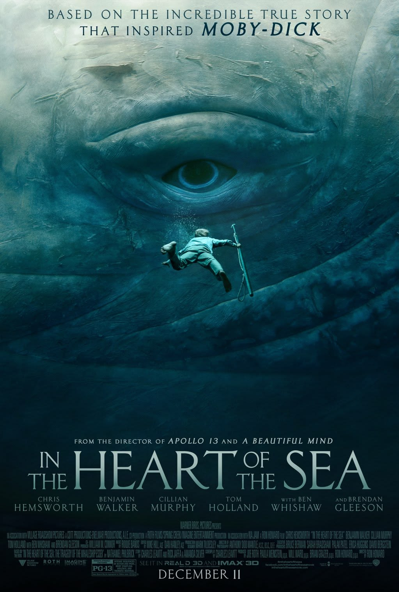
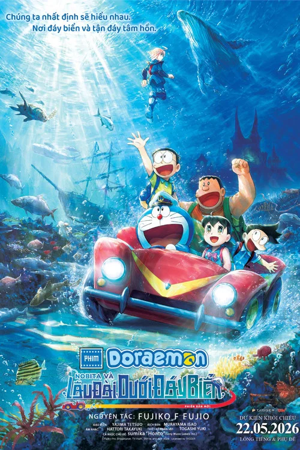
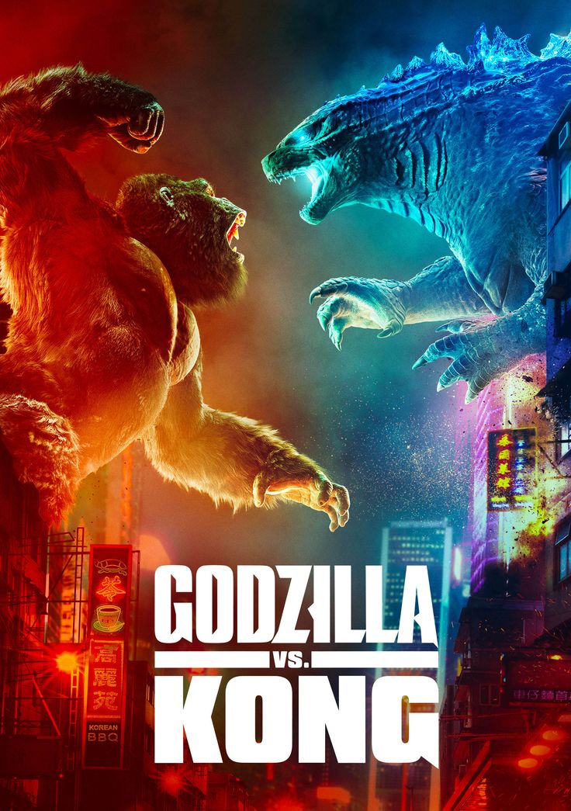

Phim
Lịch Chiếu
Rạp
Ưu Đãi
Giỏ Hàng
user3011
Trang chủ
>
Phim
Tất cả phim
The Super Mario Galaxy Movie
⭐ 4.8
130 phút
Chi tiết
Joker
⭐ 4.9
95 phút
Chi tiết
Em và Trịnh
⭐ 4.7
120 phút
Chi tiết

Alien 6
⭐ 4.6
112 phút
Chi tiết
Mirai - Cô Em Gái Đến Từ Tương Lai
⭐ 4.8
98 phút
Chi tiết

In The Heart of the Sea
⭐ 4.7
122 phút
Chi tiết

Doraemon Movie 45
⭐ 4.9
105 phút
Chi tiết

Godzilla vs Kong
⭐ 4.8
113 phút
Chi tiết
Jurassic World
⭐ 4.8
124 phút
Chi tiết
World War Z
⭐ 4.7
116 phút
Chi tiết
Phí Phông: Quỷ Máu Rừng Thiên
⭐ 4.9
120 phút
Chi tiết
Đứa Con Của Thời Tiết
⭐ 4.9
112 phút
Chi tiết